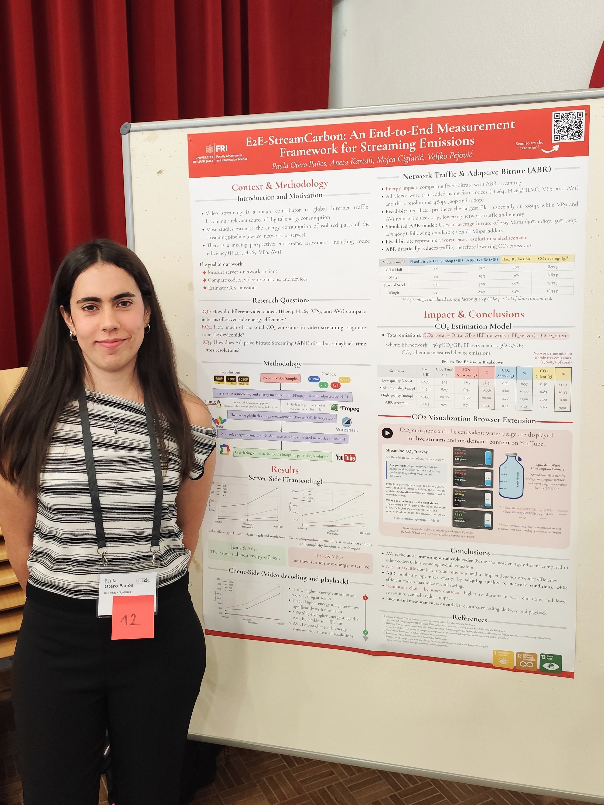
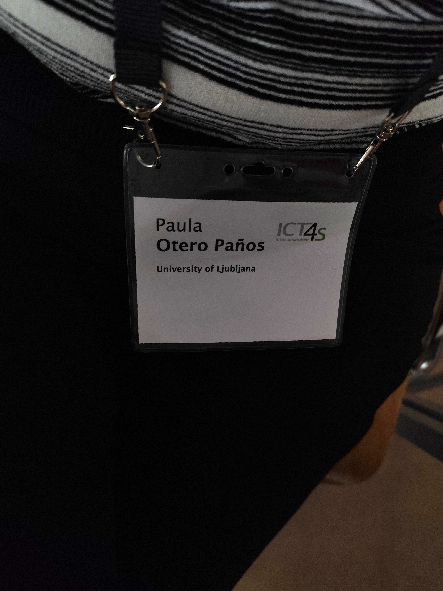

E2E-StreamCarbon:
Measuring the Carbon Footprint of Video Streaming
An end-to-end measurement framework for evaluating the energy consumption and carbon footprint of video streaming - from server transcoding to client playback - with a browser extension that makes this impact visible to everyday users.



Context
Why this matters
Online video streaming accounted for over 60% of global Internet traffic in 2023. While the environmental impact of digital services has become a growing concern, most existing estimates are based on isolated components - the network, the server, or the device - and vary widely depending on the assumptions they make.
This work fills that gap with a transparent, end-to-end measurement approach that captures all three layers of the streaming pipeline simultaneously: server-side transcoding, network data transfer, and client-side playback. We also ask a question that most studies ignore: does codec choice actually change the total environmental cost, from encoding all the way to the screen?
Methodology
How we measured it
All experiments ran on Linux using Intel RAPL counters for CPU energy measurements, repeated five times per configuration to obtain reliable averages. We tested four video samples (Sintel, Glass Half, Tears of Steel, Wingit) across four codecs (H.264, H.265, VP9, AV1) and three resolutions (480p, 720p, 1080p).
For network analysis, we compared fixed-bitrate delivery against a simulated Adaptive Bitrate (ABR) model distributing playback as 30% at 1080p, 50% at 720p, and 20% at 480p - following standard streaming ladders. CO₂ emissions were estimated by applying emission factors from official IEA and Carbon Brief reports.
Results
What we found
Codec comparison
CO₂ by streaming scenario (H.264 · 1080p)
ABR vs fixed-bitrate: data savings per video
| Video sample | Fixed H.264 1080p | ABR traffic | Data reduction | CO₂ saved |
|---|---|---|---|---|
| Glass Half | 321 MB | 71.2 MB | 78% | 8.99 g |
| Sintel | 211 MB | 19.3 MB | 91% | 6.89 g |
| Tears of Steel | 981 MB | 42.9 MB | 96% | 33.77 g |
| Wingit | 542 MB | 87.7 MB | 84% | 16.35 g |
Across all scenarios, network transmission is the dominant source of emissions, accounting for the largest share of total CO₂. Server-side encoding contributes relatively little to the total. Client-side decoding becomes significant mainly at high resolutions, and codec choice has a measurable impact here: AV1 and VP9 decode far more efficiently than H.264 or H.265.
User-facing tool
CO₂ visualisation browser extension
Streaming CO₂ Tracker
A Chrome extension that overlays real-time CO₂ and water-equivalent estimates directly on YouTube, adapting automatically as the user changes resolution or switches between live streams and on-demand content. The interface uses colour coding to signal environmental impact and displays the equivalent litres of water used to generate the energy consumed.
View on GitHub
Conclusions
Key takeaways
Network traffic dominates total streaming emissions in almost all scenarios. Choosing compression-efficient codecs like AV1 or VP9 significantly reduces data transfer, which in turn cuts overall CO₂ - even if their server-side encoding is more computationally expensive.
Adaptive bitrate streaming (ABR) is a strong lever. By dynamically adjusting quality to network conditions, ABR drastically reduces data transfer compared to fixed high-bitrate delivery - in our experiments, by 78–96% depending on the video.
Resolution choice matters. Users who habitually stream at 1080p when 720p would look identical on their device are generating substantially higher emissions. Making this visible - as the browser extension does - could encourage more conscious habits.
End-to-end measurement is essential. Server, network and client interact in ways that isolated measurements miss: a codec that's expensive to encode may be cheap to stream and cheap to decode, making its total cost far lower than it appears.
Tools & stack
Authors